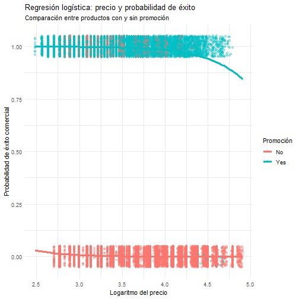

Identificación de factores que influyen en la probabilidad de éxito comercial
En esta fase se emplea un modelo de regresión logística para estimar la probabilidad de que un producto sea comercialmente exitoso, a partir de variables como el precio, la promoción, la sección y la temporada. El análisis permite clasificar los productos en función de su potencial de ventas y apoyar decisiones estratégicas antes del lanzamiento o la promoción.
Resumen de la fase
Análisis de Regresión Logística
Identificación de los factores que influyen en la probabilidad de éxito comercial de un producto.
Definición de la variable objetivo
Conversión a una variable dicotómica
Para aplicar un modelo de regresión logística es necesario definir una variable dependiente dicotómica. En este caso, se recodifica la variable de ventas para identificar si un producto puede considerarse o no un producto de éxito comercial.
Se define un producto como “éxitos de ventas” cuando su volumen de ventas se sitúa por encima de la mediana del dataset. Esta definición permite:
La nueva variable objetivo toma los valores:
Variables explicativas
Consistencia con la regresión lineal
Siguiendo la recomendación del enunciado, se utilizan las mismas variables explicativas empleadas en la regresión lineal múltiple:
De este modo, el modelo permite analizar si los factores que influyen en el volumen de ventas también afectan a la probabilidad de que un producto sea comercialmente exitoso.
Preparación de los datos
Tratamiento de variables
Antes de ajustar el modelo, se realizan las siguientes transformaciones:
Este tratamiento garantiza que el modelo logístico sea coherente y que los resultados puedan interpretarse correctamente.
Ajuste del modelo logístico
Probabilidad de éxito comercial
## ## Call: ## glm(formula = success ~ log_price + promotion + section + season, ## family = binomial(link = "logit"), data = df_logit) ## ## Coefficients: ## Estimate Std. Error z value Pr(>|z|) ## (Intercept) 3.22941 0.28171 11.464 <2e-16 *** ## log_price -2.69685 0.08699 -31.002 <2e-16 *** ## promotionYes 11.70210 0.27720 42.215 <2e-16 *** ## sectionWOMAN 2.51680 0.09964 25.258 <2e-16 *** ## seasonSpring 0.22196 0.14864 1.493 0.135 ## seasonSummer 3.87757 0.12421 31.219 <2e-16 *** ## seasonWinter 3.85846 0.11569 33.352 <2e-16 *** ## --- ## Signif. codes: 0 '***' 0.001 '**' 0.01 '*' 0.05 '.' 0.1 ' ' 1 ## ## (Dispersion parameter for binomial family taken to be 1) ## ## Null deviance: 28075.2 on 20251 degrees of freedom ## Residual deviance: 5733.2 on 20245 degrees of freedom ## AIC: 5747.2 ## ## Number of Fisher Scoring iterations: 9
El modelo estima la probabilidad de que un producto pertenezca al grupo de altas ventas en función de sus características de precio y contexto comercial.

El gráfico de regresión logística muestra una relación negativa entre el precio del producto y la probabilidad de éxito comercial. A medida que aumenta el precio (en escala logarítmica), la probabilidad estimada de que un producto se sitúe entre los más vendidos disminuye, lo que refuerza la importancia de una estrategia de precios adecuada.
Interpretación de resultados
Lectura orientada al negocio
La regresión logística permite interpretar los resultados en términos de probabilidad de éxito comercial.
Estos resultados son especialmente útiles para anticipar el desempeño de nuevos productos antes de su lanzamiento.
Conclusiones de negocio
Uso práctico del modelo
El modelo de regresión logística permite clasificar los productos según su probabilidad de éxito comercial, aportando una visión complementaria a la regresión lineal.
Desde el punto de vista del negocio, este análisis permite:
En conjunto, la regresión logística proporciona una herramienta clara y accionable para apoyar decisiones estratégicas basadas en datos.